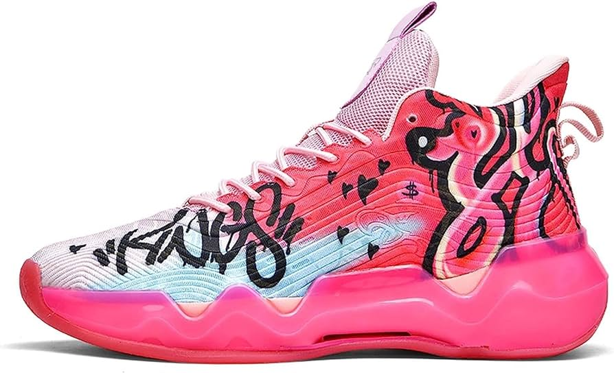
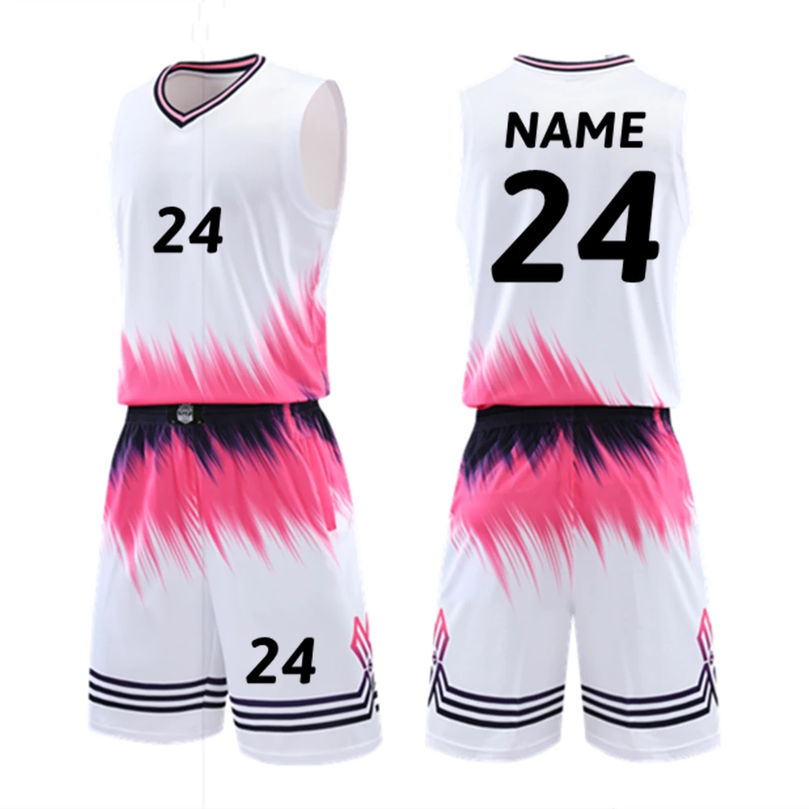

Bola de basquete

R$ 1.100,00

R$ 3,145,00
Bola Basquete Nike
O basquetebol foi criado pelo professor de Educação Física canadense James Naismith (1861-1940), em 1891. Sua invenção foi desenvolvida quando ele publicou as 13 regras para jogar basquetebol, em 1892.O esporte surgiu como uma alternativa ao inverno rigoroso da região, diferentemente dos outros praticados ao ar livre como o basebol e o futebol americano. A ideia original era criar um esporte menos violento que o futebol americano. Além disso, James Naismith pretendia criar uma maior integração entre os alunos nas aulas de Educação Física e estimular a coletividade dos grupos. O primeiro jogo oficial de basquete foi disputado em 1892, e teve uma plateia aproximada de 200 pessoas. Em 1893, o primeiro jogo feminino foi oficialmente jogado no Smith College, em Massachusetts, EUA. acesse aqui
R$ 1.100,00
Bola Basquete Nike

R$ 965,00
tamanhos: 34 a 58

R$ 864,00
tamanhos: P a EG